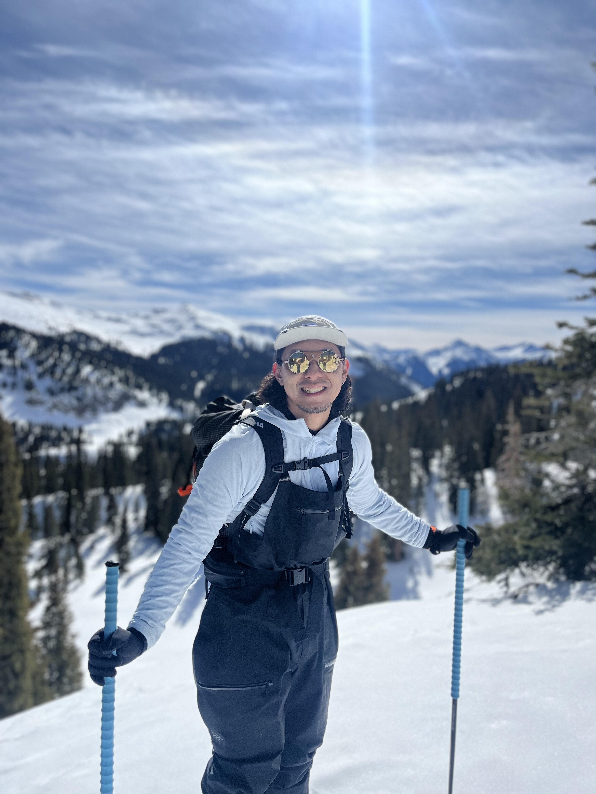
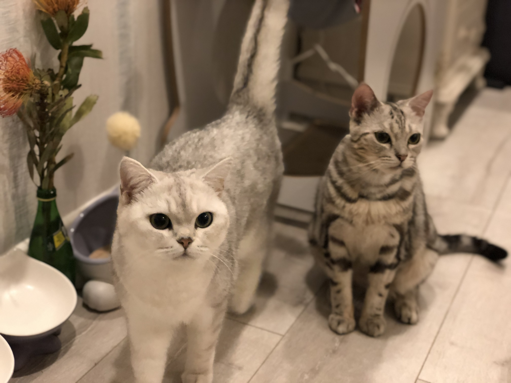
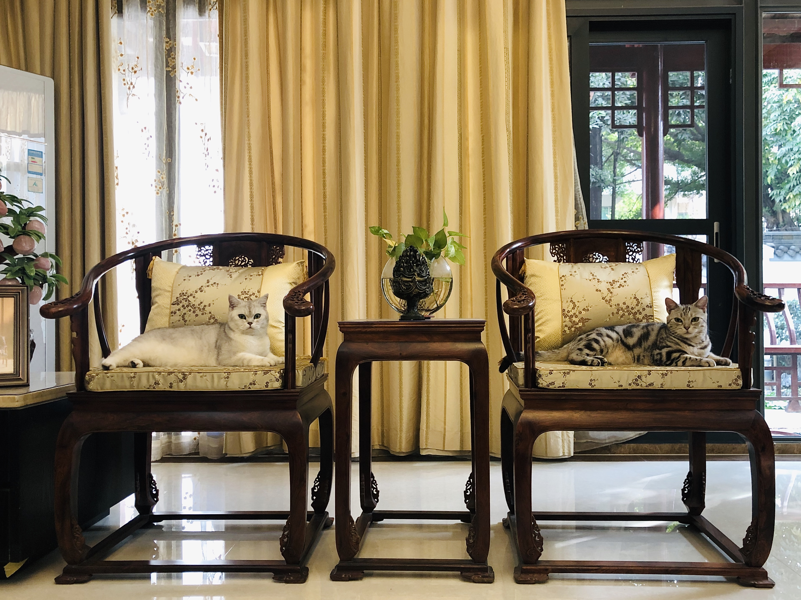

Heng Ge
Ph.D. Candidate in Biostatistics · University of Florida
I develop statistical and computational methods for genetic and genomic studies, with a focus on high-dimensional and non-linear data. I am advised by Dr. Qing Lu, and my dissertation is on the Kernel Neural Network for Complex Genetic Risk Analysis.
Away from the desk, I climb and ski in the mountains and hold professional mountain-guiding and wilderness-medicine credentials. I live in Gainesville, Florida with my wife, Jade, and our two cats, Mimi and Maymay.
Current Research
My dissertation develops the Kernel Neural Network (KNN) framework for complex genetic risk analysis — a family of methods that bridge deep learning and kernel-based statistics to capture non-linear genotype–phenotype relationships. Active projects include:
- Neural Tangent Kernels for non-linear genetic risk prediction, connecting deep learning theory with statistical genetics.
- Penalized Kernel Neural Networks for complex phenotype prediction, including generalized and multivariate-phenotype extensions.
- DiffKnock — diffusion-based knockoff statistics for controlled variable selection and inference in neural networks.
- Association tests for whole-genome sequencing data based on penalized kernel neural networks.
See the Research page for the full publication and presentation list.
Research Interests
My research focuses on developing statistical and computational methods for genetic and genomic studies, particularly in the context of high-dimensional and non-linear data. I am especially interested in improving association testing methods by integrating machine learning frameworks — such as deep learning and kernel-based approaches — with classical statistical models. My work addresses challenges arising in genome-wide association studies (GWAS), whole genome sequencing, and functional genomic assays such as bulk and single-cell RNA sequencing. Through novel method development and application to large-scale datasets like the Alzheimer's Disease Neuroimaging Initiative (ADNI) and the Religious Orders Study and Memory and Aging Project (ROSMAP), I aim to uncover complex genotype–phenotype relationships and advance our understanding of the genetic architecture underlying human diseases and related quantitative traits.
Education
-
Doctor of Philosophy in Biostatistics
University of Florida · Gainesville, FL
Related coursework: Biostatistical Advanced Methods I, Biostatistical Advanced Methods II, Large Sample Theory.
-
Master of Science in Biostatistics
University of Florida · Gainesville, FL
Related coursework: Biostatistical Methods I & II, Introduction to Biostatistical Theory, Bayesian Biostatistics Methods, Biostatistical Computing, Applied Survival Analysis.
-
Bachelor of Science in Statistics
Shandong University · Shandong, China
Related coursework: Mathematical Analysis, Advanced Algebra, Probability Theory, Mathematical Statistics, Time Series Analysis, Regression Analysis, Multivariate Statistical Analysis, Basic Stochastic Processes, Real Function Theory, Functional Analysis, Partial Differential Equations.
-
Bachelor of Economics in Finance (Double Major)
Shandong University · Shandong, China
Related coursework: Microeconomics, Macroeconomics, Monetary Economics, Central Banking.
Off the Clock
My wife Jade and I share our home with two cats, Mimi and Maymay.

